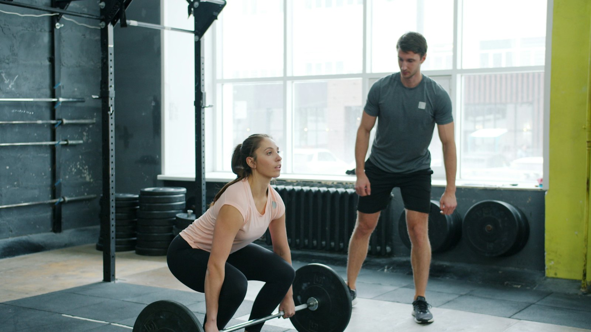
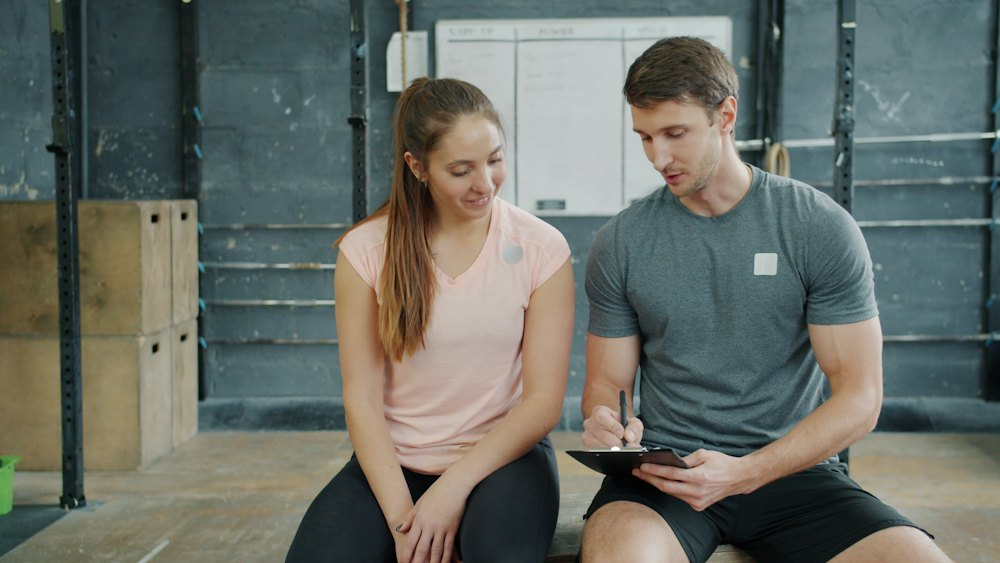
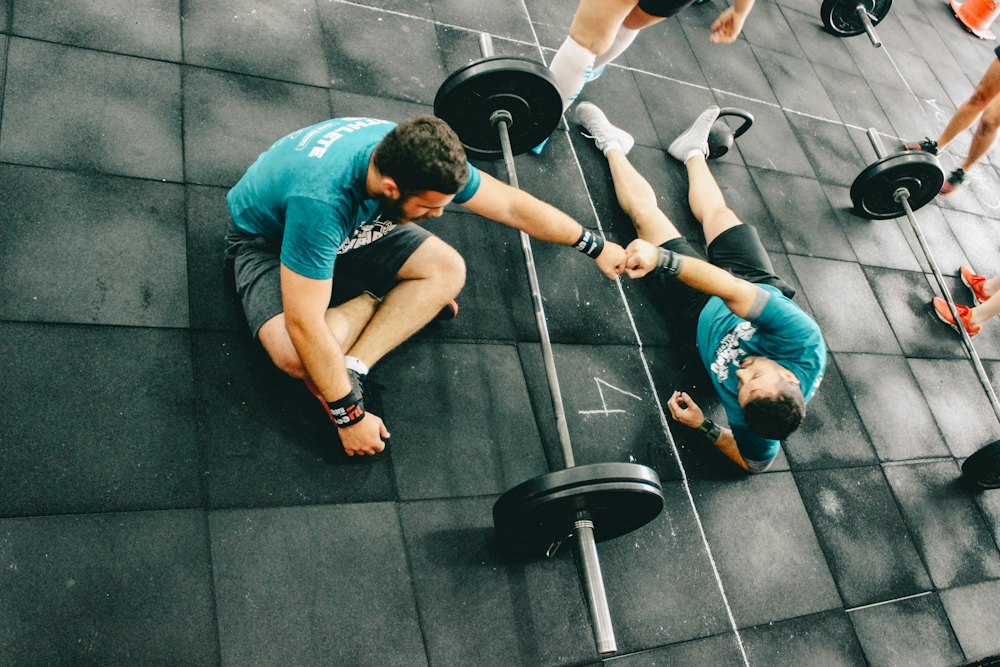

Schede in un attimo
Ogni esercizio su una riga: serie, ripetizioni, recupero e RIR. Pubblichi e la scheda arriva all'atleta alla prima sincronizzazione.

Scrivi le schede sul tuo PC, i tuoi atleti le ricevono sul telefono e ti rimandano ogni allenamento. Senza server, senza account: i dati restano tra te e loro.
Versione {{VERSIONE}} · Windows e Android · Le novità
Niente piattaforme in mezzo, niente pubblicità, niente dati raccolti: il PC del coach fa da punto d'incontro per i suoi atleti.
Ogni esercizio su una riga: serie, ripetizioni, recupero e RIR. Pubblichi e la scheda arriva all'atleta alla prima sincronizzazione.
L'atleta registra ripetizioni e carichi di ogni serie, con il timer di recupero. Tu segui i progressi di ogni esercizio nello storico, con i grafici.
Nessun account e nessun cloud: tutto passa cifrato attraverso la rete Tor, e solo i telefoni dei tuoi atleti possono raggiungere il tuo PC.

Nessuna registrazione: il collegamento tra coach e atleta nasce da un QR.
Su un PC Windows che resta acceso: è lui il punto d'incontro con i suoi atleti.
Il coach crea un invito, l'atleta lo inquadra con l'app e il telefono si collega.
Il coach pubblica, l'atleta si allena, i dati si sincronizzano in automatico.

Open Coach nasce dalla community e funziona senza dipendere da nessuno: niente server da mantenere, niente pubblicità, nessun dato raccolto. Il tuo lavoro e i dati dei tuoi atleti restano dove devono stare.
Versione {{VERSIONE}} del {{DATA}}. Il coach installa il programma, l'atleta la sua app. L'app del coach per il telefono è in più, per chi la vuole.
Il programma per Windows 10 e 11 a 64 bit. In più, se la vuoi, l'app per il telefono Android 8.0 o successivo.
Scarica il programma per Windows{{NOME_EXE}} · {{DIMENSIONE_EXE}}
Scarica l'app per Android{{NOME_APK_COACH}} · {{DIMENSIONE_APK_COACH}}
Per aggiornare, esci dal programma (area di notifica → Esci) e installa la nuova
versione sopra quella vecchia. Disinstallando, i tuoi dati restano in
%APPDATA%\OpenCoach: si cancellano solo a mano.
È un telecomando del PC: i dati restano lì e il telefono li legge attraverso Tor, finché il PC è acceso con il programma aperto. Le schede si scrivono ancora sul PC. Può stare sullo stesso telefono dell'app dell'atleta: la riconosci dall'anello aperto a forma di C.
Il programma include un catalogo di circa 220 mila prodotti venduti in Italia, ricavato da
Open Food Facts: i tuoi atleti
lo interrogano dal telefono per il diario del cibo. È nella cartella del programma,
cibo\catalogo_italia.sqlite, ed è distribuito con la licenza
Open Database
License (ODbL).
Android 8.0 o successivo · per iPhone non è ancora disponibile
Scarica per Android{{NOME_APK}} · {{DIMENSIONE_APK}}
Scarica la nuova versione da questa pagina e installala sopra quella vecchia: schede, allenamenti e collegamenti con il coach restano.
Facoltativo: serve a essere sicuri che il file scaricato sia esattamente questo.
Impronta SHA-256 di {{NOME_EXE}}:
{{SHA256_EXE}}
Impronta SHA-256 di {{NOME_APK}}:
{{SHA256_APK}}
Impronta SHA-256 di {{NOME_APK_COACH}}:
{{SHA256_APK_COACH}}
Su Windows apri PowerShell nella cartella dei download e scrivi
Get-FileHash .\{{NOME_EXE}}, oppure lo stesso comando con il nome dell'APK:
il risultato deve essere uguale a quello qui sopra.
Scaricando e usando Open Coach accetti le condizioni d'uso.